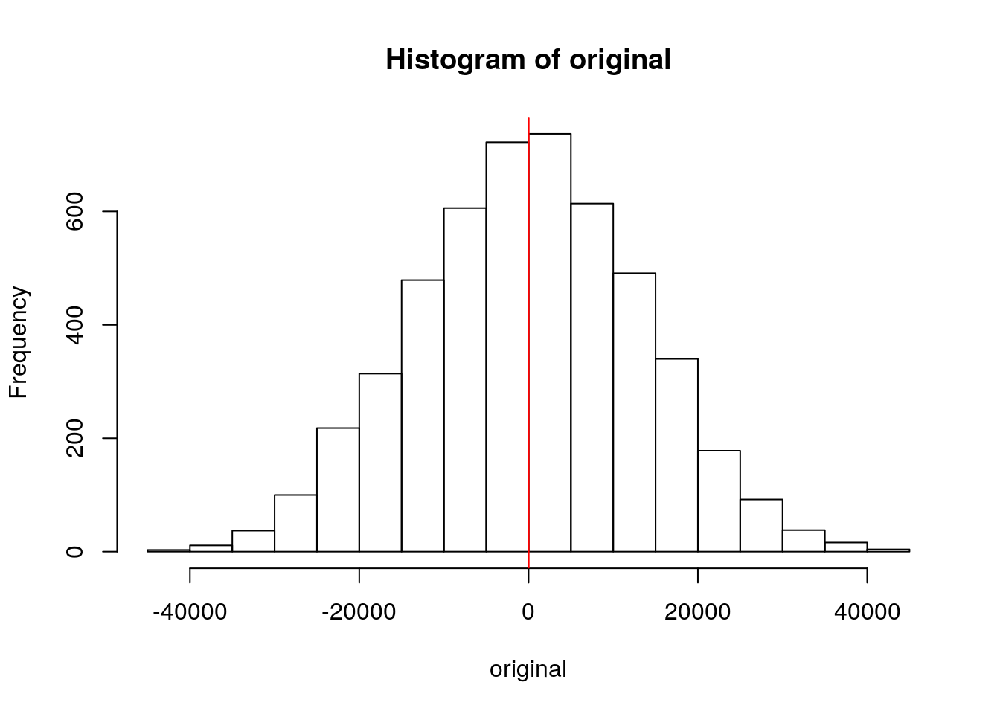
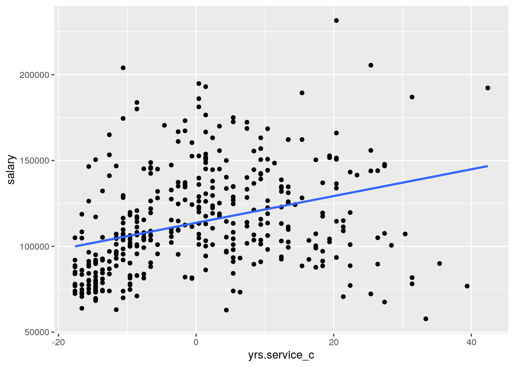
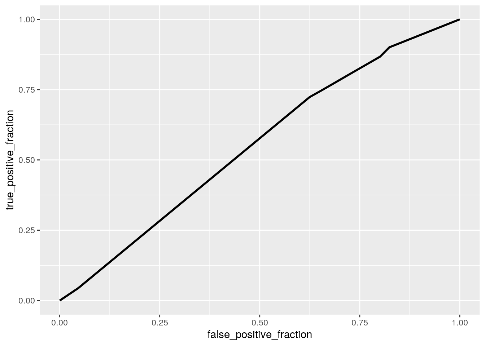
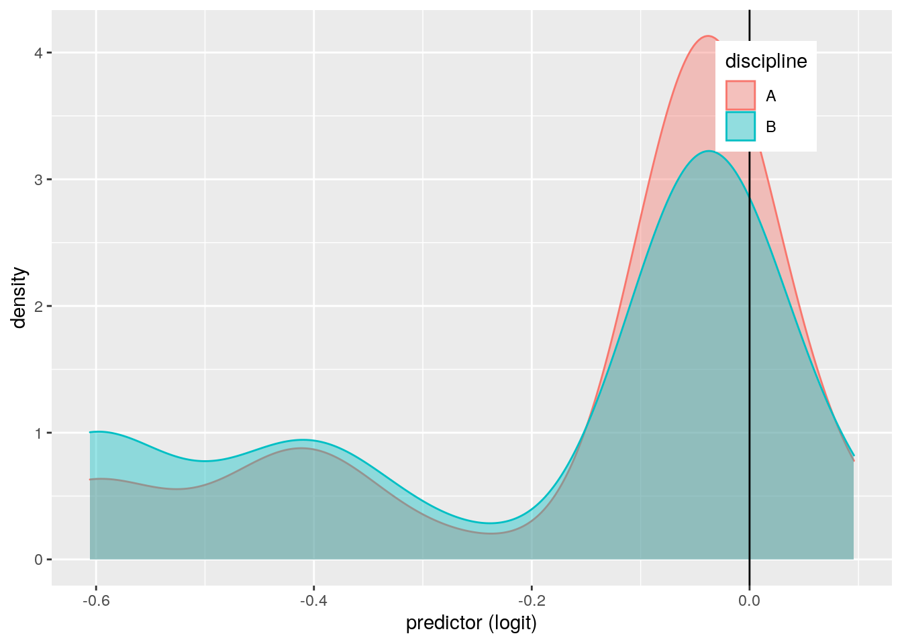
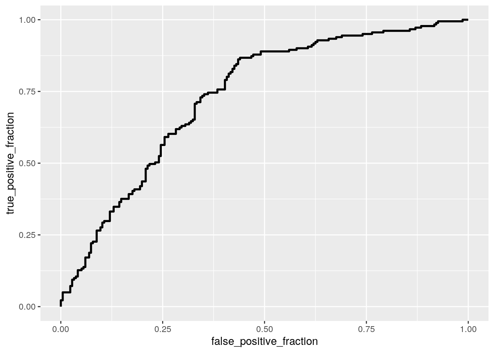
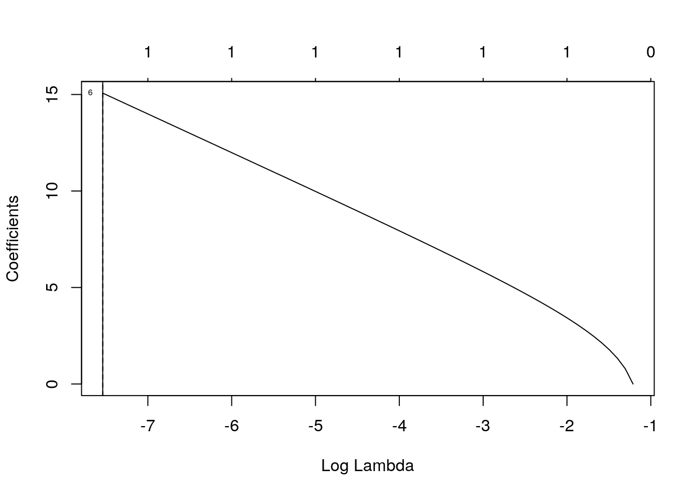

Taylor Saenz tas3672
This dataset entitled ‘Salaries’ is named after the column that describes the salaries of various professors. The dataset gives details of each professors rank (ie. professor, assistant professor, and associate professor), as well as their sex. It also details how many years it has been since each professor received their PhD, as well as how many years they have been in service as a professor. There are 397 total observations, meaning there is data on 397 difference professors. This dataset seemed interesting because I was curious to see if sex had any effect on the salary a professor receives. It also interested me to view the importance of rank and years of service on the amount a professor gets paid.
library(carData)
library(dplyr)
write.csv(Salaries, "~/Salaries.csv")
data2 <- read.csv("Salaries.csv")
prof <- manova(cbind(yrs.since.phd, yrs.service) ~ rank, data = Salaries)
summary(prof)## Df Pillai approx F num Df den Df Pr(>F)
## rank 2 0.49855 65.414 4 788 < 2.2e-16 ***
## Residuals 394
## ---
## Signif. codes: 0 '***' 0.001 '**' 0.01 '*' 0.05 '.' 0.1 ' ' 1summary.aov(prof)## Response yrs.since.phd :
## Df Sum Sq Mean Sq F value Pr(>F)
## rank 2 32390 16194.8 191.18 < 2.2e-16 ***
## Residuals 394 33376 84.7
## ---
## Signif. codes: 0 '***' 0.001 '**' 0.01 '*' 0.05 '.' 0.1 ' ' 1
##
## Response yrs.service :
## Df Sum Sq Mean Sq F value Pr(>F)
## rank 2 24812 12406 115.9 < 2.2e-16 ***
## Residuals 394 42175 107
## ---
## Signif. codes: 0 '***' 0.001 '**' 0.01 '*' 0.05 '.' 0.1 ' ' 1Salaries %>% group_by(rank) %>% summarize(mean(yrs.since.phd),
mean(yrs.service))## # A tibble: 3 x 3
## rank `mean(yrs.since.phd)` `mean(yrs.service)`
## <fct> <dbl> <dbl>
## 1 AsstProf 5.10 2.37
## 2 AssocProf 15.5 12.0
## 3 Prof 28.3 22.8pairwise.t.test(Salaries$yrs.since.phd, Salaries$rank, p.adj = "none")##
## Pairwise comparisons using t tests with pooled SD
##
## data: Salaries$yrs.since.phd and Salaries$rank
##
## AsstProf AssocProf
## AssocProf 3.6e-10 -
## Prof < 2e-16 < 2e-16
##
## P value adjustment method: nonepairwise.t.test(Salaries$yrs.service, Salaries$rank, p.adj = "none")##
## Pairwise comparisons using t tests with pooled SD
##
## data: Salaries$yrs.service and Salaries$rank
##
## AsstProf AssocProf
## AssocProf 2.0e-07 -
## Prof < 2e-16 3.2e-13
##
## P value adjustment method: none0.05/9## [1] 0.0055555561 - 0.95^9## [1] 0.3697506A MANOVA test was conducted in order to determine the effect of Professor rank on years since receiving a PhD and years of being in service as a professor. Examining bivariate density plot, there seems to be multivariate normality. Covariance matrices also showed relative homogeneity. No univariate or multivariate outliers were evident. The null hypothesis stating that years since receiving a PhD and years of being in service as a professor was the same across all ranks was rejected since a p value was less tahn 0.05. The ANOVA tests on the 2 variables were significant, and 1 MANOVA, 2 ANOVAs, and 6 t tests were used. The boneferonni adjusted rate that should be used is 0.0056 because there were 9 tests in total, and the overall type I error rate was 0.3697 The post hoc tests showed that all 3 ranks differed significantly from each other since p<0.05.
female <- c(129000, 137000, 74830, 151768, 74692, 122960, 97032,
73500, 105000, 62884, 103994)
male <- c(89516, 139750, 147765, 78000, 117150, 102580, 155750,
146500, 93418)
newsalary <- data.frame(sex = c(rep("Female", 11), rep("Male",
9)), salary = c(female, male))
head(newsalary)## sex salary
## 1 Female 129000
## 2 Female 137000
## 3 Female 74830
## 4 Female 151768
## 5 Female 74692
## 6 Female 122960newsalary %>% group_by(sex) %>% summarize(means = mean(salary)) %>%
summarize(`mean_diff:` = diff(means))## # A tibble: 1 x 1
## `mean_diff:`
## <dbl>
## 1 15967.original <- vector()
for (i in 1:5000) {
new <- data.frame(salary = sample(newsalary$salary), sex = newsalary$sex)
original[i] <- mean(new[new$sex == "Female", ]$salary) -
mean(new[new$sex == "Male", ]$salary)
}
{
hist(original)
abline(v = c(-18.258, 18.258), col = "red")
}
mean(original > 15967.46 | original < -15967.46)## [1] 0.2414new %>% filter(sex == "female")## [1] salary sex
## <0 rows> (or 0-length row.names)A randomization test was performed in order to view the mean difference in salary between males and females. The null hypothesis states that mean salary is the same for males vs females, while the alternative hypothesis states that mean salary is different for males vs females. The mean difference is 15967.46, indicating that on average, males earn 15967.46 higher salary than females do. The p value, however, is 0.2412 meaning that the null hypothesis cannot be rejected. There is a 24% chance that in the real world, you will get data that is as extreme as a difference between groups of 15967.46 if the null hypothesis were to be true. For this reason, it can be said the the mean salary for a professor is the same for males and females.
library(lmtest)
library(sandwich)
library(tidyverse)
library(dplyr)
Salaries$yrs.since.phd_c <- Salaries$yrs.since.phd - mean(Salaries$yrs.since.phd,
na.rm = T)
Salaries$yrs.service_c <- Salaries$yrs.service - mean(Salaries$yrs.service,
na.rm = T)
fit1 <- lm(salary ~ yrs.since.phd_c * yrs.service_c, data = Salaries)
summary(fit1)##
## Call:
## lm(formula = salary ~ yrs.since.phd_c * yrs.service_c, data = Salaries)
##
## Residuals:
## Min 1Q Median 3Q Max
## -63823 -17292 -2538 13158 107001
##
## Coefficients:
## Estimate Std. Error t value Pr(>|t|)
## (Intercept) 123533.470 1698.633 72.725 < 2e-16 ***
## yrs.since.phd_c 1056.086 242.975 4.346 1.76e-05 ***
## yrs.service_c 250.528 254.880 0.983 0.326
## yrs.since.phd_c:yrs.service_c -64.617 7.487 -8.630 < 2e-16 ***
## ---
## Signif. codes: 0 '***' 0.001 '**' 0.01 '*' 0.05 '.' 0.1 ' ' 1
##
## Residual standard error: 25120 on 393 degrees of freedom
## Multiple R-squared: 0.3177, Adjusted R-squared: 0.3125
## F-statistic: 60.99 on 3 and 393 DF, p-value: < 2.2e-16coeftest(fit1)##
## t test of coefficients:
##
## Estimate Std. Error t value Pr(>|t|)
## (Intercept) 123533.4702 1698.6332 72.7252 < 2.2e-16 ***
## yrs.since.phd_c 1056.0865 242.9752 4.3465 1.764e-05 ***
## yrs.service_c 250.5284 254.8801 0.9829 0.3262
## yrs.since.phd_c:yrs.service_c -64.6169 7.4871 -8.6304 < 2.2e-16 ***
## ---
## Signif. codes: 0 '***' 0.001 '**' 0.01 '*' 0.05 '.' 0.1 ' ' 1Salaries %>% ggplot(aes(yrs.service_c, salary)) + geom_point() +
geom_smooth(method = "lm", se = F)
bptest(fit1)##
## studentized Breusch-Pagan test
##
## data: fit1
## BP = 44.85, df = 3, p-value = 9.957e-10summary(fit1)$coef[, 1:2]## Estimate Std. Error
## (Intercept) 123533.47023 1698.633174
## yrs.since.phd_c 1056.08650 242.975151
## yrs.service_c 250.52836 254.880140
## yrs.since.phd_c:yrs.service_c -64.61694 7.487103coeftest(fit1, vcov = vcovHC(fit1))##
## t test of coefficients:
##
## Estimate Std. Error t value Pr(>|t|)
## (Intercept) 123533.470 1974.967 62.5496 < 2.2e-16 ***
## yrs.since.phd_c 1056.086 294.532 3.5856 0.0003786 ***
## yrs.service_c 250.528 310.707 0.8063 0.4205478
## yrs.since.phd_c:yrs.service_c -64.617 11.010 -5.8687 9.343e-09 ***
## ---
## Signif. codes: 0 '***' 0.001 '**' 0.01 '*' 0.05 '.' 0.1 ' ' 1The null hypothesis states that years since receiving a PhD and years of service as a professor will not explain variation in salary. Years since receiving a PhD and the interaction between this variable and years of service both showed to have a p value <0.05, indicating that the null hypothesis needs to be rejected. Years since receiving a PhD does explain variation in salary. After accounting for robust standard errors, the results proved to be the same as before. Years since receiving a PhD and the interaction between this variable and years of service both showed to have a p value <0.05, indicating that the null hypothesis needs to be rejected. Looking at the graph created, assumptions of a linear regression can be assessed. It appears that none of the assumptions were met. There is no linear interaction bewtween predictor and response variables, no equal variance of points along the regression line, and no normally distributed residules, according the Breuch-Pagan test.
fit2 <- lm(salary ~ yrs.since.phd_c * yrs.service_c, data = Salaries)
summary(fit2)##
## Call:
## lm(formula = salary ~ yrs.since.phd_c * yrs.service_c, data = Salaries)
##
## Residuals:
## Min 1Q Median 3Q Max
## -63823 -17292 -2538 13158 107001
##
## Coefficients:
## Estimate Std. Error t value Pr(>|t|)
## (Intercept) 123533.470 1698.633 72.725 < 2e-16 ***
## yrs.since.phd_c 1056.086 242.975 4.346 1.76e-05 ***
## yrs.service_c 250.528 254.880 0.983 0.326
## yrs.since.phd_c:yrs.service_c -64.617 7.487 -8.630 < 2e-16 ***
## ---
## Signif. codes: 0 '***' 0.001 '**' 0.01 '*' 0.05 '.' 0.1 ' ' 1
##
## Residual standard error: 25120 on 393 degrees of freedom
## Multiple R-squared: 0.3177, Adjusted R-squared: 0.3125
## F-statistic: 60.99 on 3 and 393 DF, p-value: < 2.2e-16coeftest(fit2)##
## t test of coefficients:
##
## Estimate Std. Error t value Pr(>|t|)
## (Intercept) 123533.4702 1698.6332 72.7252 < 2.2e-16 ***
## yrs.since.phd_c 1056.0865 242.9752 4.3465 1.764e-05 ***
## yrs.service_c 250.5284 254.8801 0.9829 0.3262
## yrs.since.phd_c:yrs.service_c -64.6169 7.4871 -8.6304 < 2.2e-16 ***
## ---
## Signif. codes: 0 '***' 0.001 '**' 0.01 '*' 0.05 '.' 0.1 ' ' 1boot_dat <- sample_frac(Salaries, replace = T)
samp <- replicate(5000, {
boot_dat <- sample_frac(Salaries, replace = T)
fit2 <- lm(salary ~ yrs.since.phd_c * yrs.service_c, data = boot_dat)
coef(fit2)
})
samp %>% t %>% as.data.frame %>% summarize_all(sd)## (Intercept) yrs.since.phd_c yrs.service_c yrs.since.phd_c:yrs.service_c
## 1 1943.829 287.1158 305.512 10.46944After resampling the observations, the SEs stayed increased from the original SEs but decreased from the robust standard errors. Accounting for bootstap standard errors, the SEs decreased from the robust SEs which indicates that there is less variation using bootstrap using bootstrap statistics. This means the estimation is more precise.
Salaries2 <- Salaries %>% mutate(y = ifelse(discipline == "A",
1, 0))
fit3 <- glm(y ~ rank + sex, data = Salaries2, family = binomial(link = "logit"))
coeftest(fit3)##
## z test of coefficients:
##
## Estimate Std. Error z value Pr(>|z|)
## (Intercept) -0.47057 0.38341 -1.2273 0.21970
## rankAssocProf 0.20486 0.36026 0.5686 0.56960
## rankProf 0.56645 0.28501 1.9875 0.04687 *
## sexMale -0.13509 0.34473 -0.3919 0.69515
## ---
## Signif. codes: 0 '***' 0.001 '**' 0.01 '*' 0.05 '.' 0.1 ' ' 1exp(coef(fit3))## (Intercept) rankAssocProf rankProf sexMale
## 0.6246443 1.2273527 1.7620001 0.8736344library(lmtest)
probs <- predict(fit3, type = "response")
table(predict = as.numeric(probs > 0.5), truth = Salaries2$y) %>%
addmargins## truth
## predict 0 1 Sum
## 0 206 173 379
## 1 10 8 18
## Sum 216 181 397(206 + 8)/397## [1] 0.53904288/181## [1] 0.0441989206/216## [1] 0.95370378/18## [1] 0.4444444library(plotROC)
ROCplot <- ggplot(fit3) + geom_roc(aes(d = y, m = probs), n.cuts = 0)
ROCplot
calc_auc(ROCplot)## PANEL group AUC
## 1 1 -1 0.5507852Salaries2$logit <- predict(fit3, type = "link")
Salaries2 %>% ggplot() + geom_density(aes(logit, color = discipline,
fill = discipline), alpha = 0.4) + theme(legend.position = c(0.85,
0.85)) + geom_vline(xintercept = 0) + xlab("predictor (logit)")
Rank has a significant effect (p<0.05) on discipline, indicating that rank has a significant effect on whether or not a professor is classified as being in a theoretical department (A) or an applied department (B). When controlling for rank, the odds of a male being in a theoretical department is 0.87 times higher than a female. The odds of a Professor being in a theoretical department is higher than that of a Assistant Professor and an Associate Professor since the odds ratio is the highest. The AUC value is 0.55, indicating the probability that the model will score a randomly drawn positive sample higher than a randomly drawn negative sample. The accuracy is 0.539, the sensitivity is 0.044, the specificity is 0.954, and the precision is 0.444.
class_diag <- function(probs, truth) {
if (is.numeric(truth) == FALSE & is.logical(truth) == FALSE)
truth <- as.numeric(truth) - 1
tab <- table(factor(probs > 0.5, levels = c("FALSE", "TRUE")),
truth)
prediction <- ifelse(probs > 0.5, 1, 0)
acc = mean(truth == prediction)
sens = mean(prediction[truth == 1] == 1)
spec = mean(prediction[truth == 0] == 0)
ppv = mean(truth[prediction == 1] == 1)
f1 = 2 * (sens * ppv)/(sens + ppv)
ord <- order(probs, decreasing = TRUE)
probs <- probs[ord]
truth <- truth[ord]
TPR = cumsum(truth)/max(1, sum(truth))
FPR = cumsum(!truth)/max(1, sum(!truth))
dup <- c(probs[-1] >= probs[-length(probs)], FALSE)
TPR <- c(0, TPR[!dup], 1)
FPR <- c(0, FPR[!dup], 1)
n <- length(TPR)
auc <- sum(((TPR[-1] + TPR[-n])/2) * (FPR[-1] - FPR[-n]))
data.frame(acc, sens, spec, ppv, auc)
}
fit4 <- glm(y ~ rank + sex + salary + yrs.service + yrs.since.phd,
data = Salaries2, family = binomial(link = "logit"))
coeftest(fit4)##
## z test of coefficients:
##
## Estimate Std. Error z value Pr(>|z|)
## (Intercept) 1.4560e+00 5.5822e-01 2.6082 0.009101 **
## rankAssocProf 6.1687e-02 3.9761e-01 0.1551 0.876707
## rankProf 7.1270e-01 4.5604e-01 1.5628 0.118103
## sexMale -6.1180e-02 3.6194e-01 -0.1690 0.865771
## salary -2.9394e-05 5.2550e-06 -5.5935 2.225e-08 ***
## yrs.service -4.6989e-02 2.0646e-02 -2.2760 0.022847 *
## yrs.since.phd 9.4001e-02 2.3484e-02 4.0027 6.262e-05 ***
## ---
## Signif. codes: 0 '***' 0.001 '**' 0.01 '*' 0.05 '.' 0.1 ' ' 1exp(coef(fit4))## (Intercept) rankAssocProf rankProf sexMale salary
## 4.2886449 1.0636291 2.0394888 0.9406540 0.9999706
## yrs.service yrs.since.phd
## 0.9540980 1.0985606probs1 <- predict(fit4, type = "response")
table(predict = as.numeric(probs1 > 0.5), truth = Salaries2$y) %>%
addmargins## truth
## predict 0 1 Sum
## 0 164 86 250
## 1 52 95 147
## Sum 216 181 397(164 + 95)/250## [1] 1.03695/181## [1] 0.5248619164/216## [1] 0.759259395/147## [1] 0.6462585library(plotROC)
ROCplot1 <- ggplot(fit4) + geom_roc(aes(d = y, m = probs1), n.cuts = 0)
ROCplot1
calc_auc(ROCplot1)## PANEL group AUC
## 1 1 -1 0.7341416set.seed(1234)
k = 10
data <- Salaries2 %>% sample_frac
folds <- ntile(1:nrow(data), n = 10)
diags <- NULL
for (i in 1:k) {
train <- data[folds != i, ]
test <- data[folds == i, ]
truth <- test$y
fit <- glm(y ~ (rank + sex + salary + yrs.service + yrs.since.phd),
data = train, family = "binomial")
probs <- predict(fit, newdata = test, type = "response")
diags <- rbind(diags, class_diag(probs, truth))
}
summarize_all(diags, mean)## acc sens spec ppv auc
## 1 0.6373718 0.4888593 0.7525703 0.6158126 0.7018772library(glmnet)
y <- as.matrix(Salaries2$sex)
x <- model.matrix(y ~ ., data = Salaries2)[, -1]
head(x)## rankAssocProf rankProf disciplineB yrs.since.phd yrs.service sexMale salary
## 1 0 1 1 19 18 1 139750
## 2 0 1 1 20 16 1 173200
## 3 0 0 1 4 3 1 79750
## 4 0 1 1 45 39 1 115000
## 5 0 1 1 40 41 1 141500
## 6 1 0 1 6 6 1 97000
## yrs.since.phd_c yrs.service_c logit
## 1 -3.314861 0.3853904 -0.03921656
## 2 -2.314861 -1.6146096 -0.03921656
## 3 -18.314861 -14.6146096 -0.60566615
## 4 22.685139 21.3853904 -0.03921656
## 5 17.685139 23.3853904 -0.03921656
## 6 -16.314861 -11.6146096 -0.40080660cv <- cv.glmnet(x, y, family = "binomial")
lasso <- glmnet(x, y, family = "binomial", lambda = cv$lambda.1se)
coef(lasso)## 11 x 1 sparse Matrix of class "dgCMatrix"
## s0
## (Intercept) -6.421172
## rankAssocProf .
## rankProf .
## disciplineB .
## yrs.since.phd .
## yrs.service .
## sexMale 15.060740
## salary .
## yrs.since.phd_c .
## yrs.service_c .
## logit .{
plot(cv$glmnet.fit, "lambda", label = TRUE)
abline(v = log(cv$lambda.1se))
abline(v = log(cv$lambda.min), lty = 2)
}
set.seed(1234)
k = 10
data <- Salaries2 %>% sample_frac
folds <- ntile(1:nrow(data), n = 10)
diags <- NULL
for (i in 1:k) {
train <- data[folds != i, ]
test <- data[folds == i, ]
truth <- test$y
fit6 <- glm(y ~ sex, data = train, family = "binomial")
probs3 <- predict(fit6, newdata = test, type = "response")
diags <- rbind(diags, class_diag(probs3, truth))
}
diags %>% summarize_all(mean)## acc sens spec ppv auc
## 1 0.5333974 0 0.98 NaN 0.4612468Salary, years of serive, and years since receiving a PhD have a significant effect (p<0.05) on discipline, indicating that these variables have a significant effect on whether or not a professor is classified as being in a theoretical department (A) or an applied department (B). The AUC value is 0.73, indicating the probability that the model will score a randomly drawn positive sample higher than a randomly drawn negative sample. The accuracy is 1.036, the sensitivity is 0.525, the specificity is 0.759, and the precision is 0.646. After performing a 10-fold CV, the values decreased. The AUC value is 0.70, the accuracy is 0.637, the sensitivity is 0.489, the specificity is 0.753, and the precision is 0.616. From the LASSO performed, sex was the only value retained, so a 10-fold CV was run using only sex. Running only for sex gave an AUC 0.461.
Add a new chunk by clicking the Insert Chunk button on the toolbar or by pressing Ctrl+Alt+I.
When you save the notebook, an HTML file containing the code and output will be saved alongside it (click the Preview button or press Ctrl+Shift+K to preview the HTML file).
The preview shows you a rendered HTML copy of the contents of the editor. Consequently, unlike Knit, Preview does not run any R code chunks. Instead, the output of the chunk when it was last run in the editor is displayed.